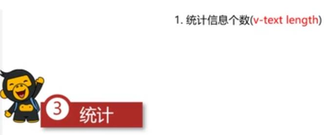

总结学习到的指令：
哪个视频
指令
用法
说明
P7
v-text
{{data中的变量}}
文本替换：不能解析为 html 标签，即写 <a> 可以会照出 <a>
P8
v-html
标签内写 v-html="data中的变量"
以 html 方式解析替换，即写 <a> 可以替换成超链接
P9
v-on
标签内写 v-on:mouseenter="b1"@:mouseenter="b1"
为元素绑定事件"b1" methods:{}
P16 v-on 补充
标签内写: @click="p2log('参数1','参数2','参数3')"
@keyup.enter="keyEnter"
P11
v-show
标签内写 v-show="true 或 变量 或 表达式 (的结果指定真假)" (true 出现,false 消失 )
控制 display=none 方式隐藏内容，使用的内存资源小，适合频繁显示/隐藏
P12
v-if
标签内写 v-if="true 或 变量 或 表达式 (的结果指定真假)" (true 出现,false 消失 )
<!-- -->方式隐藏内容，使用的内存资源大，不适合频繁显示/隐藏
P13
v-bind
标签内写 v-bind:title="t_value" :class={classP13:isRed} //对象方式-类名取决于真假:
为元素绑定属性
P15
v-for
标签内写 v-for="(item,index) in arrAdd"
数据内的 for 循环
P17 v-model
标签内写 v-model="变量"
绑定的数据会和表单元素 值 相关联
介绍
P2 Vue 简介
P3 首个例子
#app 的代码显示结果：
P4 el:挂载点
el 是用来设置 Vue 实例挂载(管理)的元素 Vue 实例的作用范围是什么呢？ 命中的元素 及其内部的 后代元素 是否可以使用其他的选择器？ ID选择器 是否可以设置其他的 dom 元素呢？ HTML 和 BODY P5 data 数据对象
Vue 中用到的数据定义在 data 中复杂类型 的数据语法 即可P6 本地应用介绍
通过 Vue 实现常见的网页效果Vue指令 ，以案例巩固知识点Vue指令 指的是以 v- 开关的一组特殊语法P7 本地应用 v-text 指令
v-text 指令的作用是：设置标签的内容(textContent)差值表达式{{}} 可以替换指定内容表达式{{}}
我会被替换
我不会被替换，变量message={{message+" "+message2+"!"}}
P8 本地应用 v-html 指令 -- 疑问：点样以{{}}的形式使用 v-html？
v-html 指令的作用是：设置元素的 innerHTML html 结构会被解析为 标签 v-text 指令无论内容是什么，只会解析为文本
{{contnet}}
P9 本地应用 v-on 指令
v-on 指令的作用是：为元素绑定事件 on @ methods 属性中 this 关键字可以访问定义在 data 中数据
{{txt1}}
P10 计数器
创建 Vue 示例时:el (挂载点)， data (数据)， methods
(方法)v-on 指令的作用是绑定事件简写为 @ this 关键字获取 data 中的数据v-text 指令的作用是设置元素的 文本值 ， 简写为{{}} v-html 指令的作用是:设置元素的 innerHTML
-
{{num}}
+
P11 本地应用 v-show 指令
v-show 指令的作用是:根据真假切换元素的显示状态解析 为 布尔值 true 元素显示，值为 false 元奏隐藏同步更新
三张图，出入时修改第三张图的状态：
this.isShow=!this.isShow; 设定反向
可以写 button 加 age 或减 age 控制
P12 本地应用 v-if 指令
v-if 指令的作用是：根据表达式的真假切换元素的显示状态 dom 元素来切换显示状态 true ，元素存在于 dom 树中，为 false ，从 dom 树中移除 v-show ，反之使用 v-if ，前者的切换消耗小
isShow变真或假{{c}}度
现在温度{{c}}度，我出来了
现在温度{{c}}度太高了
我是isShow
P13 本地应用 v-bind 指令
v-bind 指令的作用是:为元素绑定属性v-bind:属性名 v-bind ,只保留:属性名 class 建议使用对象的方式 P14 本地应用例子：图片切换
列表数据使用 数组 保存v-bind 指令可以设置元素属性，比如 src v-show 和 v-if 都可以切换元素的显示状态，频繁切换用 v-show
图片上一页，下一页效果:
P15 本地应用：v-for 指令
v-for 指令的作用是根据数据生成列表结构v-for 结合使用(item, index) in数据 --第1个变量是每1项数据，第2个变量是索引，这2个变量名可以随便改，但所代表的意义不变
第{{ indexx+1 }}个地址：{{item}}
加菜
{{m.name+" (有title)"}}
减菜
P16 本地应用：v-on 补充
事件绑定的方法写成 函数调用 的形式,可以传入自定义参数形参 来接收传入的实参.修饰符 可以对事件进行限制.enter 可以限制触发的按键为回车
console.log(传入实参)
P17 本地应用：v-model
v-model 指令的作用是便捷的设置和获取表单元素的值值 相关联<--> 表单元素的值
{{ msg }}
P18 本地应用例子-小黑记事本：功能介绍
P19 本地应用例子-小黑记事本：新增
P20 本地应用例子-小黑记事本：删除
1.数据改变，和数据绑定的元素同步 改变自定义参数 splice 方法的作用：this.list.splice(index,1) 第 index 条开始，删除 1 条
P21 本地应用例子-小黑记事本：统计

P22 本地应用例子-小黑记事本：清空
P23 本地应用例子-小黑记事本：隐藏
在底下2个功能键中做 v-show 或 v-if ="list.length!=0"(可以考虑 直接 list.length)
P24 网络应用例子-介绍
P25 网络应用例子-axios 基本使用
功能强大的网络请求库
<script src="https://unpkg.com/axios/dist/axios.min.js"></script>
axios 必须先导入才可以使用get 或 post 方法即可发送对应的请求then 方法中的回调函数会在请求成功或失败时触发https://github.com/axios/axios
P26 网络应用例子-axios + Vue
在 P25 的例子中，我已经做好了...
axios 回调函数中的 this 已经改变无法访问到 data 中数据this 保存起来回调函数中直接使用保存的 this 即可数据来源 P27 网络应用例子-天知道介绍
P28 网络应用例子-天知道 Enter 查询
应用的逻辑代码建议和页面 分离 ,使用 单独 的s文件编写axios 回调函数中 this 指向改变了,需要额外的保存一份层级 结构P29 网络应用例子-天知道 点击查询
自定义参数可以让代码的 复用性 更高
methods 中定义的方法内部,可以通过 this 关键字点出其他的方法
P30 综合应用-介绍
P31 综合应用-音乐查询
P32 综合应用-音乐播放
P33 综合应用-歌曲封面
P34 综合应用-歌曲评论
P35 综合应用-播放动画
P36 综合应用-播放MV
播放器的资料总结：
工作说明
端口使用
P31.通过搜索端口，得到歌曲列表
https://autumnfish.cn/search?keywords=王菲
P32.通过歌曲id，得到歌曲地址
https://autumnfish.cn/song/url?id=386175
P33.通过歌曲id，得到歌曲封面.jpg
https://autumnfish.cn/song/detail?ids=386175
P34.通过歌曲id，得到歌曲精品评论
https://autumnfish.cn/comment/hot?type=0&id=386175
P36.通过 mvid，注意这个 id 就 之前的 mvid
https://autumnfish.cn/mv/url?id=386175